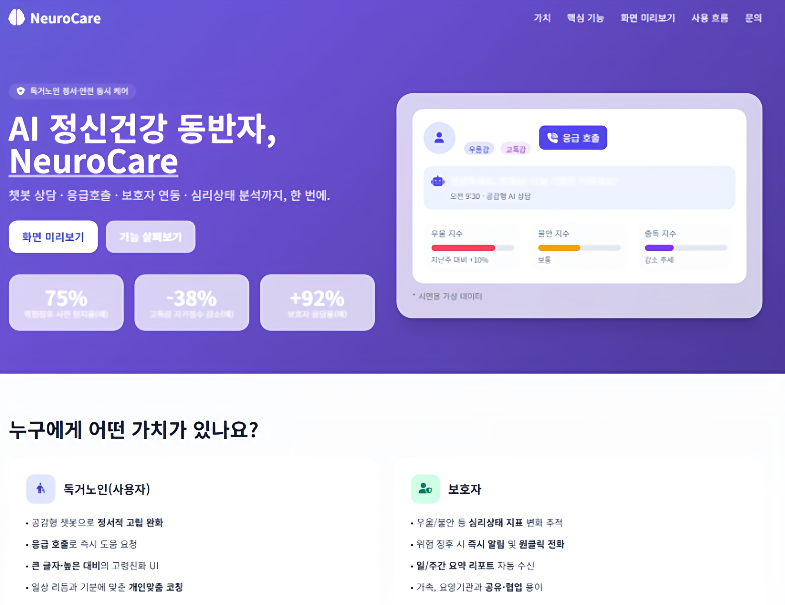
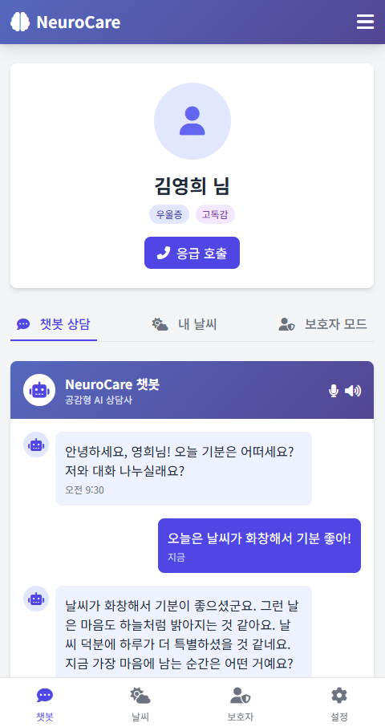
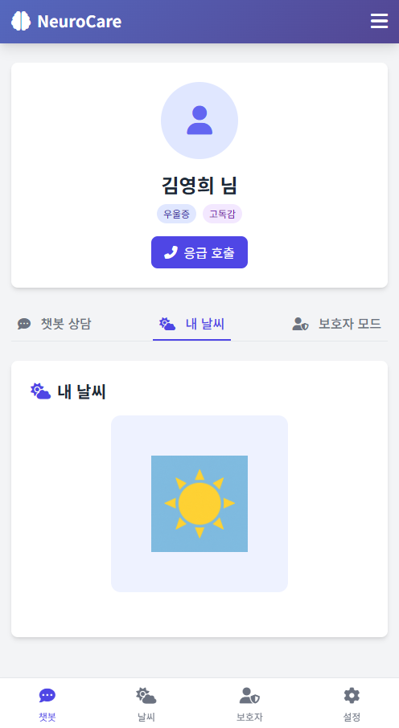
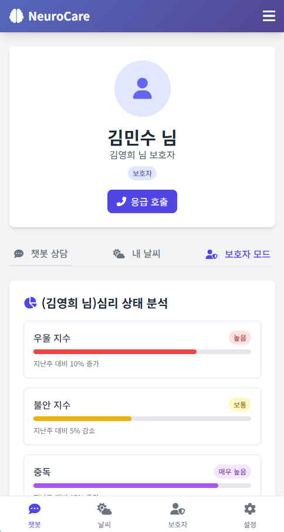
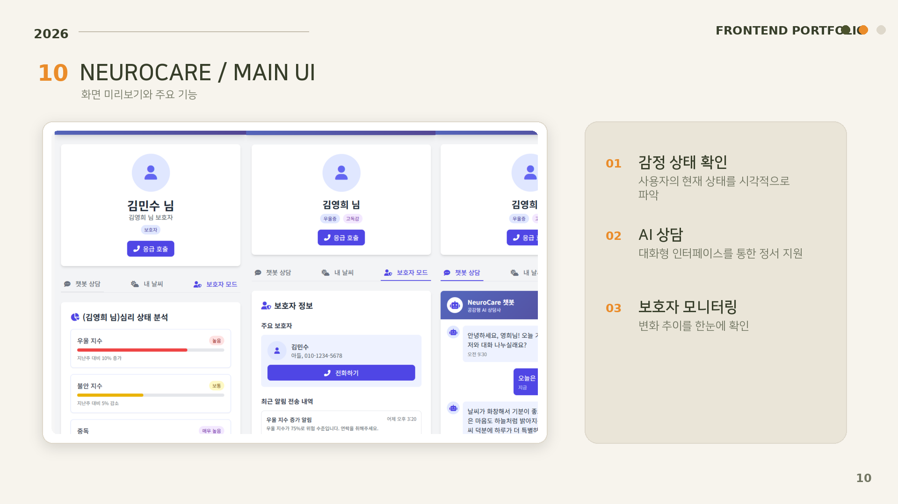

기존 독거노인 돌봄이 낙상·화재 같은 신체 위험에 집중한다면, NeuroCare는 대화를 통해 정서적 돌봄의 공백을 발견하고 연결하는 데 집중했습니다.
고령 사용자
복잡한 지표 대신 대화를 시작하고 자신의 상태를 부담 없이 확인할 수 있어야 합니다.
보호자
멀리 있어도 상태 변화와 위험 신호를 빠르게 파악할 수 있어야 합니다.
독거노인의 일상 대화를 공감형 AI 경험으로 만들고, 그 대화에서 필요한 정서 정보를 정리해 사용자와 보호자의 돌봄 흐름을 연결했습니다.

기존 독거노인 돌봄이 낙상·화재 같은 신체 위험에 집중한다면, NeuroCare는 대화를 통해 정서적 돌봄의 공백을 발견하고 연결하는 데 집중했습니다.
복잡한 지표 대신 대화를 시작하고 자신의 상태를 부담 없이 확인할 수 있어야 합니다.
멀리 있어도 상태 변화와 위험 신호를 빠르게 파악할 수 있어야 합니다.
사용자와 보호자가 같은 데이터를 보더라도 필요한 깊이와 표현 방식은 다릅니다.
챗봇 상담, 내 날씨, 보호자 모드를 명확한 탭으로 구분하고 모바일에서는 하단 내비게이션으로 전환했습니다. 기능을 한 화면에 모두 노출하지 않아 탐색 부담을 줄였습니다.
사용자 메시지는 즉시 화면에 추가하고, AI 응답을 기다리는 동안 타이핑 인디케이터를 표시합니다. 성공 시 응답과 시각을 갱신하고 실패 시 재시도를 안내해 서비스가 멈춘 것처럼 보이지 않게 했습니다.
상태를 단정적인 진단 수치로만 보여주지 않고 날씨와 색상 같은 친숙한 시각 언어로 바꿨습니다. 사용자는 자신의 상태를 직관적으로 이해하고, 보호자는 더 구조화된 정보를 확인합니다.
응급 호출 버튼의 결과를 모달로 명확히 확인시키고, 보호자 화면에는 최근 알림과 임계치 설정을 배치했습니다. 정보 제공을 넘어 다음 행동으로 이어지는 화면을 설계했습니다.
과거 경험 회상을 유도하도록 파인튜닝된 모델의 답변을 후처리해, 짧고 공감적인 문장과 하나의 개방형 질문으로 정리합니다.
전체 대화를 그대로 노출하지 않고 주요 증상·위험 요인·개선 요인·개입 요인으로 요약해 정보 범위를 구분합니다.




이 프로젝트에서 프론트엔드는 단순히 AI 결과를 출력하는 역할이 아니었습니다. 고령 사용자가 부담 없이 대화하고 상태를 이해하도록 표현을 바꾸고, 보호자에게는 대응에 필요한 범위만 구조화해야 했습니다. 이를 통해 누구에게 어떤 정보를 어떤 방식으로 보여줄지 결정하는 일이 인터페이스의 핵심임을 배웠습니다.